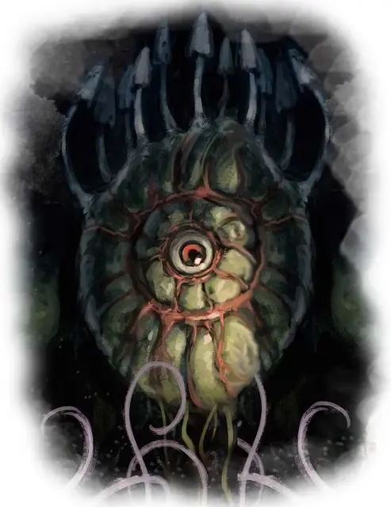

Газовая спора
Gas Spore
Большое Растение, без мировоззрения

Класс Доспеха 5
Хиты 1 (1к10 - 4)
Скорость 0 футов, летая 10 футов (парит)
| мод | спас | ||
|---|---|---|---|
| СИЛ | 5 | −3 | −3 |
| ЛОВ | 1 | −5 | −5 |
| ТЕЛ | 3 | −4 | −4 |
| мод | спас | ||
|---|---|---|---|
| ИНТ | 1 | −5 | −5 |
| МДР | 1 | −5 | −5 |
| ХАР | 1 | −5 | −5 |
Иммунитет к урону яд
Иммунитет к состояниям сбивание с ног, паралич, отравление, ослепление, испуг, глухота
Чувства слепое зрение 30 футов (слеп за пределами этого радиуса), пассивное Восприятие 5
Опасность 1/2 (100 опыта)
Бонус мастерства +2
Среда обитания Подземье
Особенности
Предсмертный взрыв. Газовая спора взрывается, когда её хиты опускаются до 0. Все существа в пределах 20 футов от неё должны преуспеть в спасброске Телосложения Сл 15, иначе получат 10 (3к6) урона ядом и заболеют при провале. Существа, обладающие иммунитетом к отравленному состоянию, обладают и иммунитетом к болезни.
Споры населяют организм существа, и убивают его через количество часов, равное 1к12 + значение Телосложения существа, если болезнь до этого времени не будет вылечена. Когда пройдёт половина этого срока, существо станет отравленным до конца длительности болезни. После того, как существо умирает, из него вылетают 2к4 Крохотные газовые споры, которые вырастают до полного размера за 7 дней.
Жуткое сходство. Газовая спора выглядит как бехолдеры. Существо, видящее газовую спору, может понять её истинную природу, если совершит успешную проверку Интеллекта (Природа) Сл 15.
Действия
Касание. Рукопашная атака оружием: +0 к попаданию, досягаемость 5 футов, одно существо. Попадание: Урон ядом 1, и существо должно преуспеть в спасброске Телосложения Сл 10, иначе будет поражено болезнью, описанной в тексте Предсмертного взрыва.
Описание
Первые газовые споры, как считается, появились из мёртвых бехолдеров, чьи гниющие трупы напитали грибы-паразиты искажённой магией. Прошло много времени, и газовые споры превратились в отдельное растение, быстро и целеустремлённо растущее уже безо всяких трупов, создавая злобно выглядящую насмешку над самым страшным обитателем Подземья.
Форма бехолдера. Газовая спора — это сферический пузыревидный гриб, напоминающий издалека бехолдера, однако его истинная натура становится все более очевидна по мере приближения к нему. У чудовища есть слепой центральный «глаз» и отростки на верхней части, на первый взгляд напоминающие глаза бехолдера.
Предсмертный хлопок. Газовая спора это пустая оболочка, наполненная газом легче воздуха, который позволяет ей висеть в воздухе как бехолдер. Если пронзить спору даже слабейшей атакой, она лопается, выпуская облако смертоносных спор. Существо, которое вдохнёт их, становится носителем и может умереть всего лишь за один день. Его труп при этом становится пищей, из которой возникает новая газовая спора.
Воспоминания бехолдера. Газовая спора, возникшая из трупа бехолдера, иногда перенимает в себя часть воспоминаний своего погибшего прародителя. Когда она взрывается, смертоносные споры распространяют эти воспоминания. Вдохнувшее такую спору существо, если оно выживет, получает часть воспоминаний бехолдера, и может узнать о его логове, окружающей местности или её обитателях.
См. дополнительно статью: "Бестиарий: Грибы"